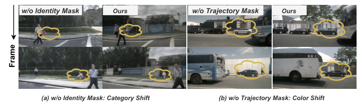

ConsisDrive：用于 Ins 视频生成的身份保护驾驶世界模型
简单摘要
自动驾驶需要大规模高质量多视图驾驶视频和精确标注用于训练感知、跟踪和规划模型，但真实数据采集和标注成本高昂。受益于生成式视频模型的快速进展，驾驶世界模型已成为合成多样化逼真驾驶场景的有前景的替代方案。帧间实例身份保持对生成逼真驾驶视频至关重要——多目标跟踪和感知任务需要时域稳定的实例外观以确保可靠的时域上下文理解，规划依赖周围智能体的时域连贯轨迹。现有基于扩散的世界模型频繁遭受身份漂移（同一目标在帧间改变外观甚至类别——如红车变黑、公交变卡车），严重降低视频真实感和下游任务的可用性。本文识别了三个根本原因：缺乏显式实例身份条件使模型无法在长时域内锚定一致身份；当前扩散Transformer的注意力机制非实例感知——MMDiT计算来自不同实例的所有视觉token的3D全注意力导致实例间信息泄露；现有训练目标对整帧施加统一监督迫使模型以同等重要性重建背景像素和关键前景区域，背景像素主导场景导致监督稀释使模型无法关注细粒度身份保持特征。
核心创新
第一，提出ConsisDrive——一种身份保持的驾驶世界模型，显式注入实例级身份信号（类别、颜色、形状）到生成过程中，在帧间锚定一致身份。第二，设计实例掩码注意力机制——对每个实例应用独立的空间注意力掩码，防止注意力在不同实例间泄露导致特征混淆和身份漂移。第三，提出实例感知的训练目标——对前景关键区域施加更高权重使模型聚焦于细粒度身份保持特征，避免背景主导导致的监督稀释。第四，构建实例级记忆库跨帧传播和存储实例特征以保持长期身份一致性。在nuScenes和Waymo上的实验表明在视频生成质量和实例级时域一致性上显著优于先前世界模型。
技术细节
此外，我们引入实例类别标签、实例大小和跟踪 ID 来提取实例身份条件并将其合并到注意力过程中。我们添加了建议的可学习实例屏蔽注意力模块来处理每个实例的身份调节。我们引入了一种可学习的实例屏蔽注意力机制，该机制注入每个实例的身份条件并将它们与复制块的相应输出融合。作者这样设计，是为了把这一节的输入、约束和输出关系讲清楚。
3 方法
围绕 3 方法，我们引入了一种身份保护的驾驶世界模型，专门设计用于强制实例级时间一致性。我们的框架将实例意识融入到 3D 全注意力机制中（第 2 节）。作者这样设计，是为了把这一节的输入、约束和输出关系讲清楚。
3.1 概述
为了实现细粒度的控制，我们引入了一套全面的控制条件，包括边界框投影、路线图和场景描述。此外，我们引入实例类别标签、实例大小和跟踪 ID 来提取实例身份条件并将其合并到注意力过程中。每个控制块将条件特征与基本块的相应输出融合，从而调制特征流并确保控制信号在整个过程中有效结合。作者这样设计，是为了把这一节的输入、约束和输出关系讲清楚。
3.2 实例屏蔽注意力
围绕 3.2 实例屏蔽注意力，我们添加了建议的可学习实例屏蔽注意力模块来处理每个实例的身份调节。实例屏蔽注意力模块将实例身份条件与复制块的相应输出融合，并调整其特征以实现实例感知注意力。我们引入了一种可学习的实例屏蔽注意力机制，该机制注入每个实例的身份条件并将它们与复制块的相应输出融合。作者这样设计，是为了把这一节的输入、约束和输出关系讲清楚。
3.2.1 实例身份条件
对于视频中出现的每个实例，我们构建一个全局条件，该条件集成了实例的多个因素，包括其类别、其唯一的跟踪 ID 以及其边界框的大小。这些组件连接起来并通过多层感知器 (MLP)，以生成实例全局身份条件嵌入。视频中所有实例的完整嵌入集表示为。作者这样设计，是为了把这一节的输入、约束和输出关系讲清楚。
$$ g_i = \text{MLP}([\tau_\theta(c_i), \gamma(s_i), \gamma( ID_i)]). $$
放在“方法”这一部分看，这条式子重点不是孤立地罗列符号，而是交代 g i 如何承接前面的输入并把结果交给后续步骤。
$$ G = \{g_i\}_{i=1}^n. $$
放在“方法”这一部分看，这条式子是在把 G 写成可直接计算的形式。右侧按元素列出了 G 的组成项，说明模型是在逐像素、逐高斯或逐候选地同时预测一整组属性，而不是只输出单个标量。
3.2.2 实例屏蔽注意力和熔断机制
我们将从副本 MMDiT 块中提取的视觉标记表示为 ，将实例条件标记表示为。然后，我们在 Instance-Masked Attention 模块中的主干特征和连接的实例条件标记上应用 3D 自注意力（SA），可以表示为。为了解决这个问题，我们构造一个掩码矩阵来确定有效连接。作者这样设计，是为了把这一节的输入、约束和输出关系讲清楚。
$$ \tilde{V} = \text{SA}_\text{mask}([V, G]). $$
放在“方法”这一部分看，这条式子重点不是孤立地罗列符号，而是交代 V 如何承接前面的输入并把结果交给后续步骤。
$$ \tilde{\mathbf{x}}_{i,c}^t = \mathbf{K}^t ( \mathbf{R}^t \mathbf{X}_{i,c} + \mathbf{T}^t ), \quad \mathbf{x}_{i,c}^t = \Big(\tfrac{\tilde{x}}{\tilde{z}}, \tfrac{\tilde{y}}{\tilde{z}}\Big), $$
放在“方法”这一部分看，这条式子重点不是孤立地罗列符号，而是交代 x i,c t 如何承接前面的输入并把结果交给后续步骤。
$$ I(v_k) \equiv I(t,p) = \{\, i \mid \exists (x,y),\, \tilde{BM}_i(t,x,y)=1 \,\}, $$
放在“方法”这一部分看，这条式子重点不是孤立地罗列符号，而是交代 这一项中间量 如何承接前面的输入并把结果交给后续步骤。
$$ V = V + \tanh(\omega)\,\tilde{V}[:m], $$
这条式子是在定义一个可直接计算的中间量：右侧把相对位置、方向、权重或比例关系组合起来，左侧则把这个组合结果记成后续模块要反复使用的变量。
$$ M_{k,m+i} / M_{m+i,k} = -\infty \quad \text{if } i \notin I(v_k), $$
放在“方法”这一部分看，它重点在定义或约束 M k,m+i / M m+i,k 这一项。这条式子是在定义一个可直接计算的中间量：右侧把相对位置、方向、权重或比例关系组合起来，左侧则把这个组合结果记成后续模块要反复使用的变量。
$$ M_{k,j} = -\infty \quad \text{if } I(v_k) \cap I(v_j) = \emptyset. $$
放在“方法”这一部分看，这条式子重点不是孤立地罗列符号，而是交代 M k,j 如何承接前面的输入并把结果交给后续步骤。
3.3 实例掩盖损失
围绕 3.3 实例掩盖损失，然而，现有的训练目标对整个帧应用统一的监督，迫使模型重建具有同等重要性的背景像素（例如天空、建筑物）和关键前景区域。为了解决这个问题，我们提出了 Instance-Masked Loss，它将监督信号集中在前景对象上，如图 2 所示。具体来说，我们从 Instance-to-Token Indicator 函数构造一个二进制损失掩码。
$$ \mathcal{\tilde{L}}_{\text{mask}} = \begin{cases} \mathcal{L}_{\text{mask}}, & \text{if } p < \alpha \\ \mathcal{L}, & \text{if } p \geq \alpha \end{cases} $$
放在“方法”这一部分看，它重点在定义或约束 L mask 这一项。这条式子给出了训练阶段的优化目标。阅读时可以先看左侧到底在约束什么，再区分右侧每一项对应的是重建误差、正则项还是辅助监督。
实验结论
具体来说，继 Panacea 之后，我们采用基于视频的感知模型 StreamPETR 并报告 nuScenes 检测分数 (NDS) 和平均精度 (mAP) 等指标。为了进一步评估跨帧的实例特定特征的传播，我们评估了现实世界自动驾驶场景中多目标跟踪（MOT）任务的模型。
我们生成的视频实现了卓越的时间保真度，将 FVD 降低至。这一改进源于所提出的实例屏蔽注意力模块，该模块保留跨帧的实例属性，从而增强实例级时间一致性。我们通过检查全局实例属性与生成内容的绑定程度来评估实例级时间一致性。
4.1 设置
具体来说，继 Panacea 之后，我们采用基于视频的感知模型 StreamPETR 并报告 nuScenes 检测分数 (NDS) 和平均精度 (mAP) 等指标。为了进一步评估跨帧的实例特定特征的传播，我们评估了现实世界自动驾驶场景中多目标跟踪（MOT）任务的模型。
| Method | Multi-View | Multi-Frame | FVD | FID |
|---|---|---|---|---|
| BEVControl | - | 24.85 | ||
| DrivingDiffusion | 332 | 15.83 | ||
| Panacea | 139 | 16.96 | ||
| MagicDrive-V2 | 94.84 | 20.91 | ||
| DriveScape | 76.39 | 8.34 | ||
| DriveDreamer2 | 55.7 | 11.2 | ||
| DiVE | 94.6 | - | ||
| DrivingSphere | 103.42 | - | ||
| UniScene | 70.52 | 6.12 |
4.2 培训详情
我们的方法是基于OpenSora V2.0实现的。所有训练输入均设置为 16x256x448 并在 A100 GPU 上进行。实验结果表明，我们的方法可以稳定生成超过200帧。
4.3 主要结果
4.3.1 定量分析
为了验证我们生成的视频的细粒度时间一致性和高保真度，我们将我们的方法与各种最先进的驾驶世界模型进行了比较。这一改进源于所提出的实例屏蔽注意力模块，该模块保留跨帧的实例属性，从而增强实例级时间一致性。当我们通过使用生成的视频增强真实数据来进一步重新训练 StreamPETR 时，感知模型的 nuScenes 检测分数 (NDS) 为 ，表示比。
| Method | Real | Gen. | mAP | mAOE | mAVE | NDS |
|---|---|---|---|---|---|---|
| Oracle | - | 34.5 | 59.4 | 29.1 | 46.9 | |
| Panacea | - | 22.5 red(65.22%) | 72.7 | 46.9 | 36.1 red(76.97%) | |
| Panacea | 37.1 blue(+2.6%) | 54.2 | 27.3 | 49.2 blue(+2.3%) | ||
| (Ours) | - | 31.5 red(91.3%) | 63.0 | 33.1 | 42.06 red(89.68%) | |
| .9 (Ours) | 43.2 blue(+8.7%) | 39.8 | 25.2 | 54.6 blue(+7.7%) |
| Method | Real | Gen. | NDS |
|---|---|---|---|
| Oracle | - | 46.90 | |
| Panacea | - | 32.10 (68.00%) | |
| MagicDrive-V2 | - | 36.82 (78.51%) | |
| .9 | .9 - | .9 .9 | .9 blue41.38 (88.23%) |
| Method | Real | Gen. | AMOTA | AMOTP | IDS |
|---|---|---|---|---|---|
| Oracle | - | 0.289 | 1.419 | 687 | |
| DriveDreamer2 | 0.313 | 1.387 | 593 (-94) | ||
| InstaDrive | 0.496 | 1.376 | 532 (-155) | ||
| .9 (Ours) | 0.498 | 1.350 | 525 blue(-162) |
4.3.2 定性分析
实验先检查了 这种改进源于实例掩蔽损失监督，即使在前景空间比例非常大并且背景像素在场景中占主导地位时，它也会优先对前景区域进行监督，从而防止前景信号被干扰。

| Settings | FVD | FID | NDS | IDS |
|---|---|---|---|---|
| .9 | 37.23 | 3.88 | 41.38 | 525 |
| w/o IMA(Identity) | 40.89 blue(+3.66) | 5.29 blue(+1.41) | 37.55 blue(-3.83) | 735 blue(+210) |
| w/o IMA(Trajectory) | 53.66 blue(+16.43) | 4.41 blue(+0.53) | 40.40 blue(-0.98) | 1074 blue(+549) |
| w/o IML | 40.19 blue(+2.96) | 4.24 blue(+0.36) | 36.85 blue(-4.53) | 637 blue(+112) |
4.4 消融研究
我们通过定性和定量分析验证了三个关键组成部分，证明了它们的有效性和稳健性。定性比较如图 1 所示。缺乏全局身份调节会导致感知任务的 NDS 下降一个点。
理解评价
如果把这篇论文放回问题背景里看，它真正的价值在于：我们引入了 ConsisDrive，这是一种身份保护的驾驶世界模型，旨在在实例级别强制执行时间一致性。这说明作者不是只补一个局部模块，而是在重新组织问题该怎样被解决。
最能支撑这个判断的，还是实验给出的证据：此外，我们引入了实例类别标签、实例大小和跟踪 ID 来提取实例身份条件并将它们合并到注意力过程中，这是我们提出的实例屏蔽注意力模块中的关键机制，详细信息请参见第 2 节。换句话说，这些设计并不只是概念上更完整，而是实实在在改变了最终结果。
当然，它离真正成熟的方案还有距离：当前方案的主要局限在于它仍然受到计算资源、输入质量或场景复杂度的约束，离真正大规模稳定部署还有距离。后续更值得继续推进的方向，是 当我们通过使用生成的视频增强真实数据来进一步重新训练 StreamPETR 时，感知模型的 nuScenes 检测分数 (NDS) 为 ，这表示比仅使用真实数据进行训练有了 点改进。